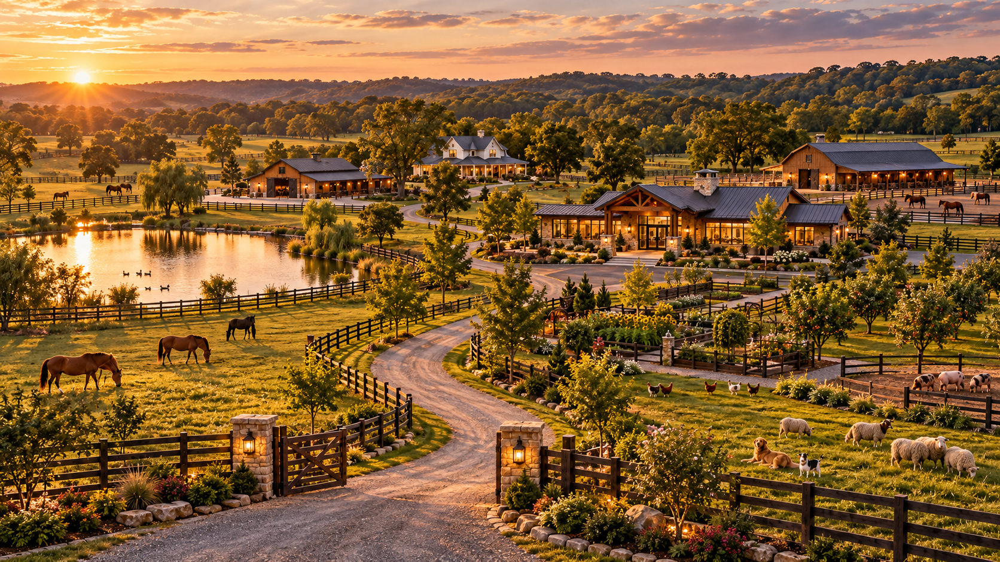
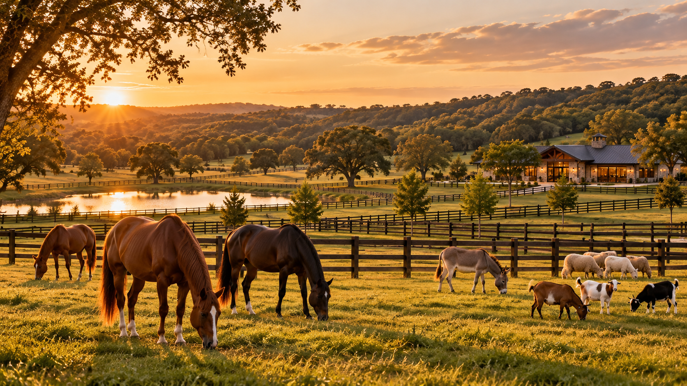
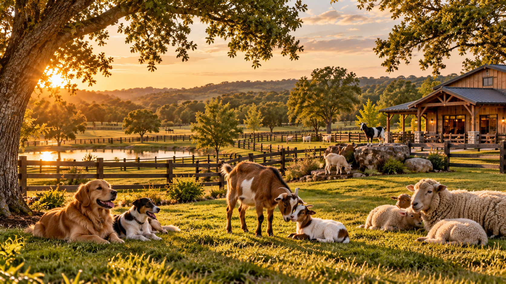
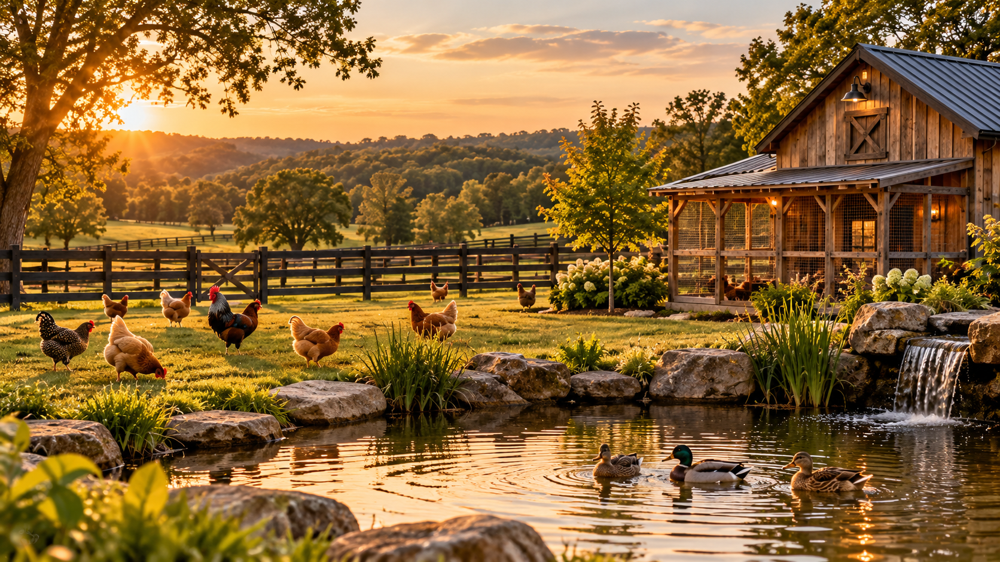
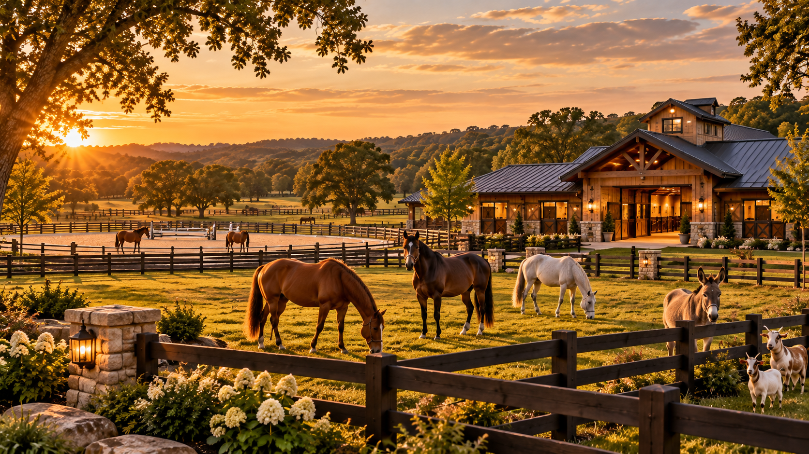
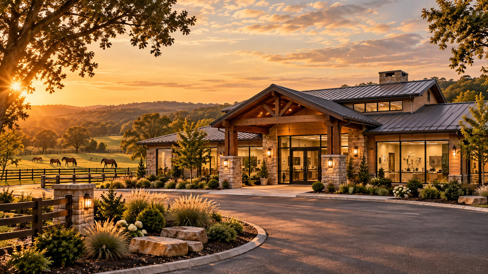
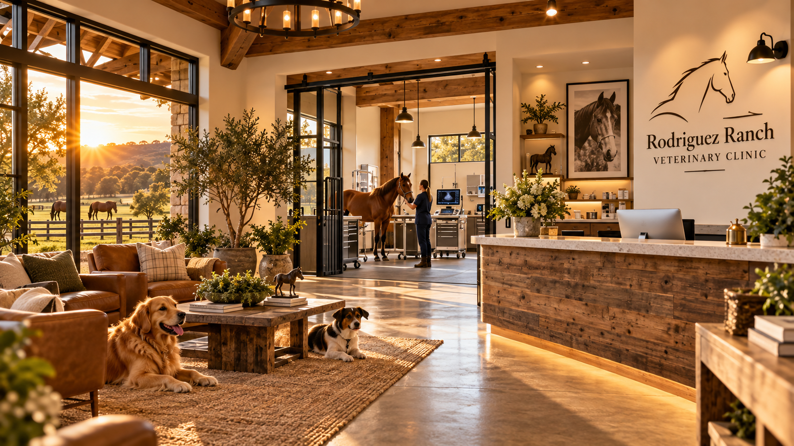
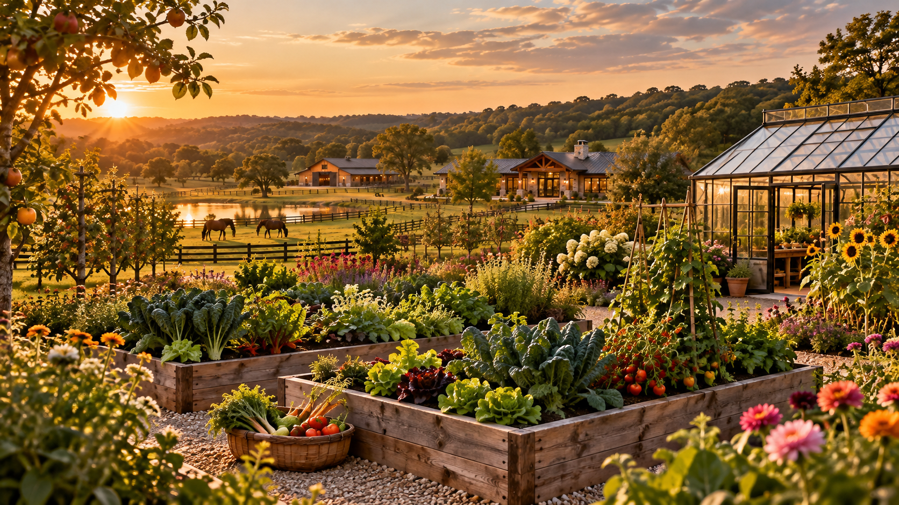
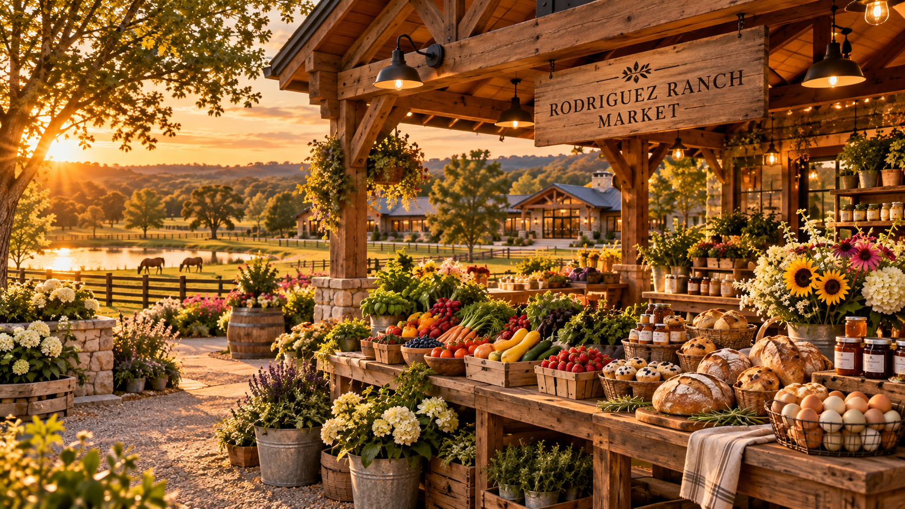
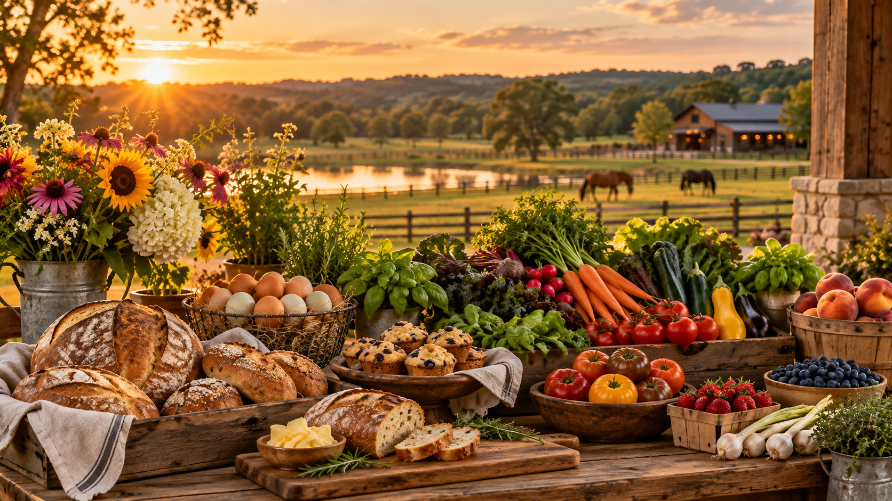

Veterinary Center
A dedicated professional clinic serving companion and large animals.
Rodriguez Ranch
Built on Service. Rooted in the Land.
A Future Working Ranch in Tennessee
Land. Animals. Food. Family. Purpose.
A vision for a working ranch where veterinary medicine, agriculture, animals, food production, plants, rescue, and community all grow together.
The Vision
Rodriguez Ranch is envisioned as roughly twenty acres where animals, food, medicine, land, and family exist as one connected system.
Horses may graze beside goats and sheep while chickens and ducks move through another part of the property. Gardens, fruit trees, and greenhouse spaces produce food and plants. A veterinary center operates from its own dedicated area of the ranch.
Over time, each part of that lifestyle can grow into its own business while remaining part of Rodriguez Ranch.

The Property
The long-term vision is not to divide the property into unrelated businesses. Each part of the ranch supports another.
A dedicated professional clinic serving companion and large animals.
Horses, donkeys, goats, sheep, pigs, poultry, and other ranch animals.
Vegetables, herbs, fruit trees, greenhouse production, and specialty plants.
Produce, eggs, meat, baked goods, plants, and future ranch-made products.
Life on the Ranch
The ranch is planned around the animals that live there rather than treating them as scenery.






RR Veterinary Center
A professional veterinary center designed to feel connected to the land around it.
The clinic is envisioned as one dedicated part of Rodriguez Ranch rather than the entire ranch itself. It can grow into a full-service practice serving local families and animals throughout the Clarksville area.
Companion Animal Medicine
Surgery & Diagnostics
Preventive Care
Future Equine Medicine
Future Large-Animal Care
Digital Client Portal
Grow What We Can
Food production and plant cultivation are meant to be part of everyday ranch life.
Vegetable beds, herbs, fruit trees, flowers, greenhouse plants, and nursery stock can help make the property more self-sufficient while eventually supporting RR Botanicals and the Rodriguez Ranch Market.

One Ranch. Many Traditions.
Each venture can develop independently while sharing one identity, one property, and one standard of quality.
01
Veterinary medicine, surgery, diagnostics, preventive care, and future equine services.
Flagship Venture02
Ranch-raised meat, eggs, produce, and agricultural products.
Future Venture03
Nursery plants, fruit trees, specialty plants, and greenhouse-grown products.
Future Venture04
Breads, pastries, seasonal goods, and products inspired by ranch-grown ingredients.
Future Venture05
Future space for animals needing safety, rehabilitation, care, and another chance.
Community Mission

Ranch to Table
The long-term goal is to produce more of what the ranch consumes while also creating goods that can eventually be shared with the community.
RR Veterinary Center
The future veterinary client portal can give families simple access to their pet's health information and upcoming care.
RR Veterinary Center
Patient
Canine • 4 years old
Next Appointment
Nov 14 Annual WellnessVaccines
Current No action neededMedications
1 Active View medicationThe Long-Term Vision
Phase One
Land, fencing, housing, pastures, gardens, animals and infrastructure.
Phase Two
Establish the veterinary practice and serve families throughout the area.
Phase Three
Expand RR Farms, Botanicals, and ranch-based food production.
Phase Four
Bring the ranch businesses together while expanding rescue and community work.
Rodriguez Ranch
Animals. Land. Food. Family. Service.